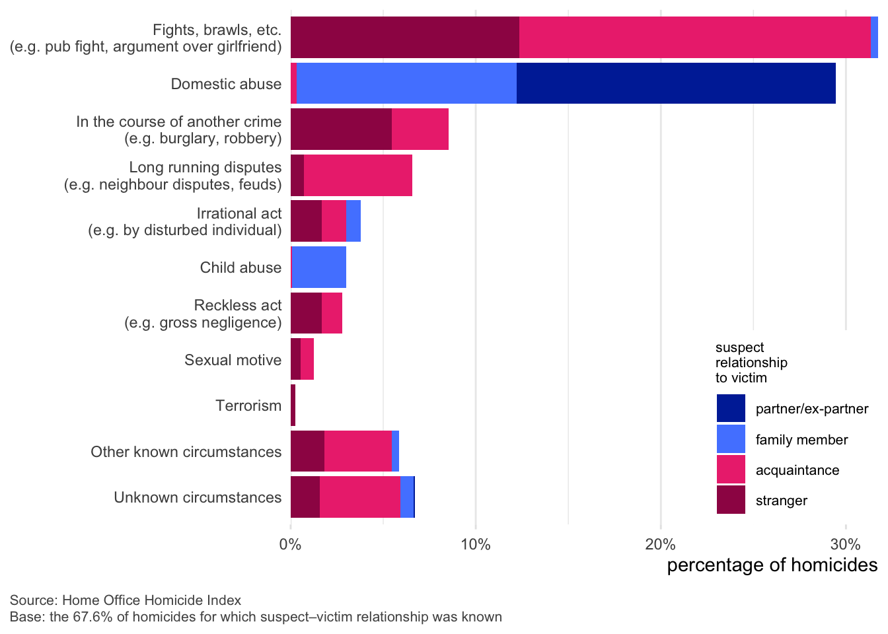

![A bar chart displays annual homicide victimisation rates per million people by age group and sex in five-year categories from birth to age 90+. Dark blue bars represent male victims, and light blue bars represent female victims. Male victimisation rates are highest between ages 15–34, peaking at over 30 per million. Female rates remain lower across all ages but rise among those aged 85 and over. The male rate declines steadily after age 34. The data source is the Home Office Homicide Index, based on 99.9% of homicides where victim age and sex were known. A legend distinguishes male and female bars.](index_files/figure-html/fig-vic-age-sex-1.png)
Homicide in England and Wales, Part 2: Victims of homicide
This is the second in a series of blog posts summarising the nature of homicide in England and Wales. Each post covers a different aspect of homicide, based on data from the Home Office Homicide Index. This post looks at who the victims of homicide are. This post is a summary of part of a longer national problem profile of homicide in England and Wales written by me and Prof Iain Brennan.
From 2019 to 2022 an average of 623 people were victims of homicide each year in England and Wales. That’s equivalent to about 12 homicides per week. Put another way, it means that each year about one in every 100,000 people is murdered each year in England and Wales. As we saw in the first post in this series, that is low by international standards.
Men are more likely to be victims of homicide than women
Men are much more likely than women to be victims of homicide (Figure 1). From 2019 to 2022, about 73% of victims were male and 27% were female. Homicide victimisation also varies with age: for men and boys, homicide risk peaked between the ages of 15 and 24, before decreasing throughout the rest of adulthood. For female victims the picture was different, with victimisation risk remaining largely constant from ages 25 to 80.
Two other patterns are worth noting in Figure 1. First, very-young children (both boys and girls) were much more likely to be homicide victims than older children were. The rate of female homicide victimisation was higher for girls aged less than one year than for any other single year of age. Secondly, homicide risk for women appears to have been higher after age 70, although the smaller number of female victims makes it harder to be certain about this.
Most homicide victims are White, but Black people are at higher risk
A majority of homicide victims (67%) were White, with 15% being Black, 8% Asian and the remaining 9% being of other or unknown ethnicities (Figure 2). In all age groups, Black people had a higher rate of victimisation than the population as a whole. White people and victims with mixed/multiple ethnicity had lower homicide victimisation rates than the population as a whole at all ages.
![Bar chart showing homicide victimisation rates per million people in England and Wales by age group and ethnicity, based on data from the Home Office Homicide Index. The chart is divided into five panels by ethnicity: All victims, Asian, Black, Mixed/Multiple, and White victims. Each panel displays vertical bars for age groups in ten-year intervals from 0 to 80+, with darker bars indicating lower or equal homicide rates compared to the total population of the same age, and red bars indicating higher rates. A stepped line overlays each panel, showing the homicide rate for all ethnicities for reference. The chart highlights significantly higher homicide rates among young Black victims at all ages, peaking at over 100 victims per million at age aged 20–29. Other ethnic groups generally show lower or comparable homicide rates to the overall population, with slight increases among certain age groups. The data is based on the 95.1% of homicides for which both age and ethnicity were known. The purpose of the chart is to reveal disparities in homicide victimisation rates across different ethnic groups and age ranges.](index_files/figure-html/fig-vic-age-ethnicity-1.png)
Figure 3 shows ethnic disparities in homicide victimisation: how the likelihood of a person being a victim of homicide compares to the likelihood of being a victim for a White person of the same age and sex. This shows that even after controlling for age and sex, Black people in particular have higher homicide victimisation rates than White people. For example, all else being equal a Black boy aged 10–17 is 13.4 times as likely to be a victim of homicide as a White boy of the same age, while a Black man aged 18–29 is 13.3 times as likely to be a victim of homicide as a White man of the same age.
![A heatmap chart showing homicide disparity ratios in England and Wales by victim ethnicity, sex, and age group. Rows represent ethnic groups (Asian, Black, and Other) and columns represent age groups for female and male victims. The number in each cell shows the rate of homicides in of people of a particular ethnicity relative to the rate of homicides for White people of the same age and sex. The darkest red cells, indicating highest relative risk, appear for Black males aged 10–17 and 18–29, with risk ratios of ×13.4 and ×13.3 respectively. Other males aged 18–29 and Black females 65+ also show elevated risks. Cells with fewer than 5 homicides are marked with a dash (–). Source: Home Office Homicide Index. Base: 96.2% of homicides with known age, sex, and ethnicity.](index_files/figure-html/fig-ethnic-disparity-1.png)
Figure 4 shows the rate of homicide victimisation by ethnicity in the different Home Office homicide sub-types. Black people were at highest risk in all sub-types except sub-type 4 (female victims of non-domestic homicide). However, since most of the population of England and Wales is White, the largest number of victims were White in all sub-types except sub-type 3 (male victims up to age 25 killed in a public place), in which Black victims had a risk of victimisation more than four times higher than other ethnic groups.
![A set of eight horizontal bar charts compares annual homicide victimisation rates per million people across different ethnic groups in England and Wales, segmented by victim Home Office homicide sub-type. Each chart includes five ethnic groups: Black, Other, Asian, White, and Mixed/Multiple. Dashed lines show the average for each sub-type. Black individuals consistently show higher victimisation rates, especially among male victims under 25 killed in public (peaking near 60 per million). Data is from the Home Office Homicide Index, excluding the Grays lorry deaths.](index_files/figure-html/fig-vic-cluster-1.png)
Important 1: Why are Black people at higher risk?
A person’s vulnerability to homicide depends on a wide range of factors from how they spend their time to how able they are (physically and cognitively, but also economically) to protect themselves.
The Homicide Index is the most-detailed dataset for studying homicide at the national level, but it is still limited in the information it contains. Most social and economic factors are related to one another in some way, for example some groups in society are on-average more deprived than others, so ethnicity and deprivation are related. That means that when we can measure some factors but not others, it’s possible that a relationship caused by a factor we can’t measure (like deprivation) might appear to be caused by a related factor we can measure (e.g. ethnicity).
It is therefore crucial to remember that people in a group being more at risk does not mean they are more at risk because they are members of that group. For example, young men aren’t at greater risk of homicide because they’re young men; they’re at greater risk of homicide because being a young man (which is recorded in the Homicide Index) generally means you are likely to spend more time in the sorts of places where violence is more common (which isn’t recorded in the Homicide Index).
Ultimately, how likely someone is to be a victim of homicide depends on a combination of factors related to disadvantage, vulnerability and opportunity. No one factor can explain homicide vulnerability on its own.
Unemployed people are much more likely to be victims of homicide
Unemployed people were 16 times more likely to be victims of homicide than the population as a whole. The only other groups with higher victimisation rates than the rate for employed people (who make up the largest proportion of adults) were full-time students (who were 1.5 times more likely to be a victim than employed people) and retired people (1.3 times more likely).
For victims with known age, employment status, ethnic group and sex, the most common categories of victim were unemployed White men in their 30s (6% of victims), unemployed White men in their 40s (5%), and unemployed White men in their 50s (5%). Between them, these three categories make up 16% of all homicide victims, despite making up about 0.9% of the overall population.
![Horizontal bar chart showing annual homicide victimisation rates per 100,000 people in England and Wales, broken down by age, sex, and ethnicity. The highest rates are for Black males aged 16–24 (21.5) and 25–34 (14.4), followed by Asian males 16–24 (3.2). Most victims with higher rates are young to middle-aged males, especially Black males. Females across all groups show significantly lower rates, all below 1.2. Bars are colored red for males and blue for females. Data is sourced from the Home Office Homicide Index, covering 90.6% of cases where victim demographics were known, excluding mixed/other ethnicities.](index_files/figure-html/fig-vic-risk-1.png)
Despite some groups in society being at much higher risk of homicide victimisation than others, homicide remained a rare event for every group in society (Figure 5). For example, a randomly chosen Black male aged 16–24 had a less than 1-in-4,000 chance of being a victim of homicide in 2022, but this was over 100 times higher than the chance of a randomly chosen Asian male aged under 16 being a victim of homicide (where the risk of being a homicide victim was less than 1-in-502,000).
Average risks for groups can never tell the whole story
It is critical to remember that the patterns identified in this series of blog posts are overall patterns for groups of people, not predications about individuals. Each one of us is unique in many ways that will influence how likely we are to be killed in a homicide. While Black men in their 20s are in-general at much higher risk of homicide than White women in their 60s, it’s still entirely possible that the individual circumstances of a specific women in her 60s might put her at higher risk than a specific Black man in his 20s.
Most homicides occur during brawls or domestic abuse
The Homicide Index categorises homicides into different types based on the circumstances in which they occur (Figure 6). The most common set of circumstances is homicides that occur during the course of fights, brawls, etc. (32% of all homicides). Of those incidents, in 60% of those cases the suspects were acquaintances (19% of all homicides) and in 39% of those cases the suspects were strangers. The second most-common circumstance was domestic abuse (29% of all homicides).
Fights, brawls, etc. and domestic abuse together made up 61% of all homicides in England and Wales. Media representations of homicide – both in the news and in fiction – tend to focus on pre-meditated homicides by strangers, but most actual homicides occur in much more everyday circumstances and involve victims and suspects who know one another.

Among homicides where the suspects were strangers, the most common circumstances were homicides committed during fights, brawls, etc. (47% of homicides by strangers), in the course of another crime (21% of homicides by strangers), irrational act (6% of homicides by strangers), or as a result of reckless acts (6% of homicides by strangers). We will return to domestic-abuse homicides in part six of this series.
In summary
While homicide is rare for all groups in society, some groups are at much higher risk of being killed. This includes men (especially young men) being at higher risk than women, and Black people (especially young Black men) being at much higher risk than White people of the same age and sex.
The next post in this series looks at homicide offenders.